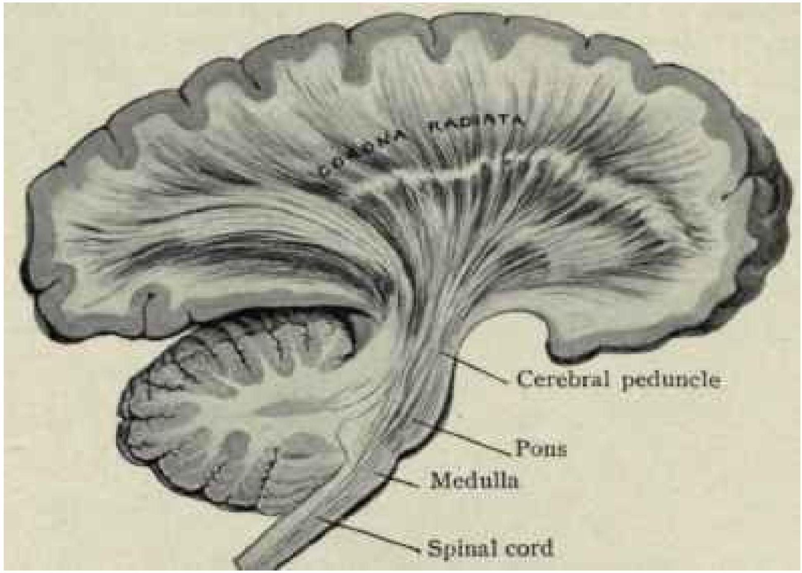
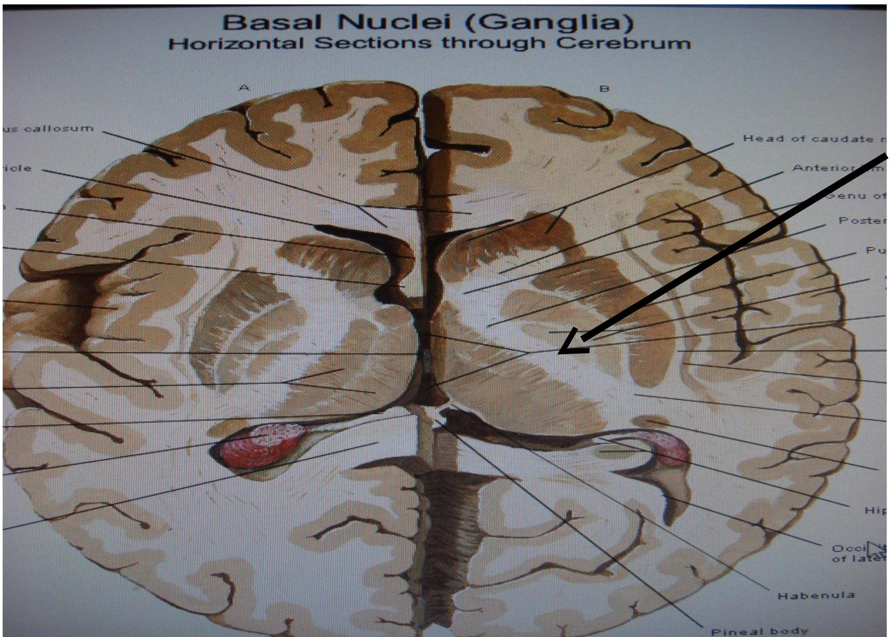
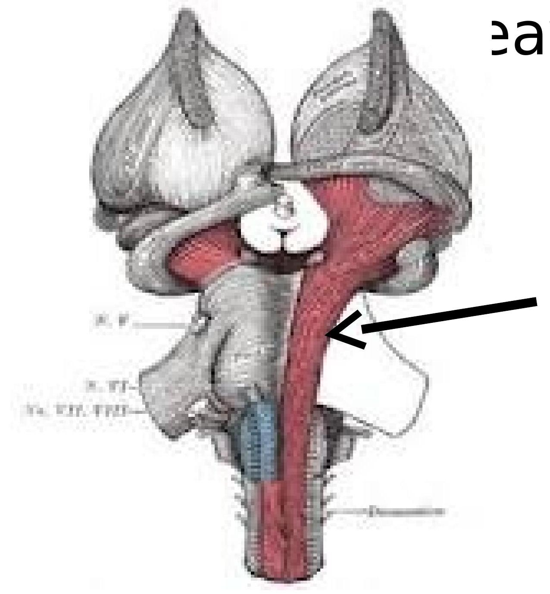
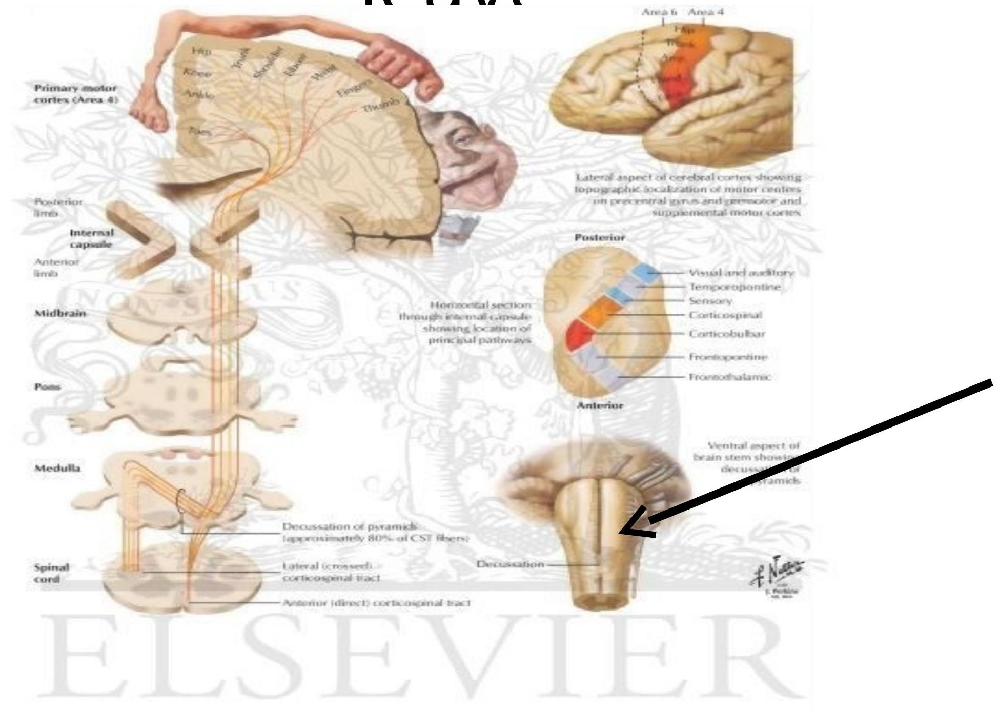
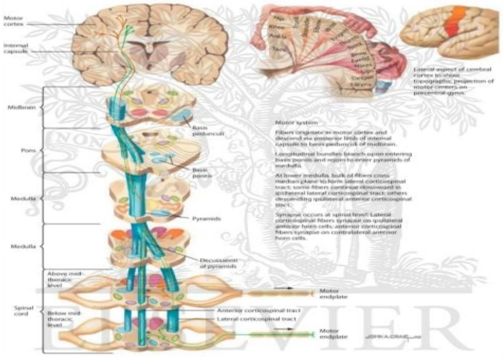
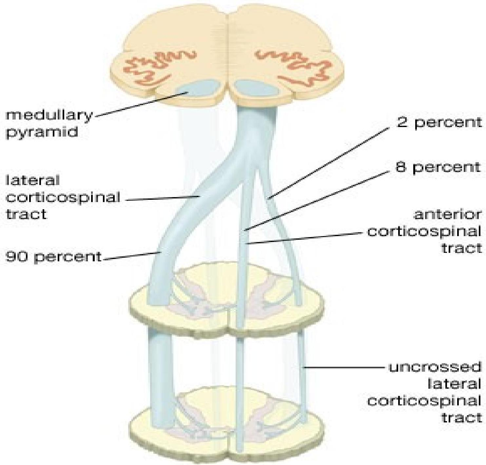
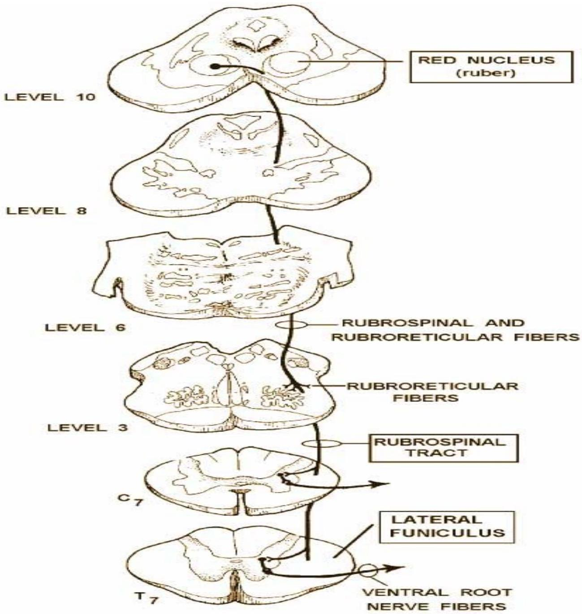
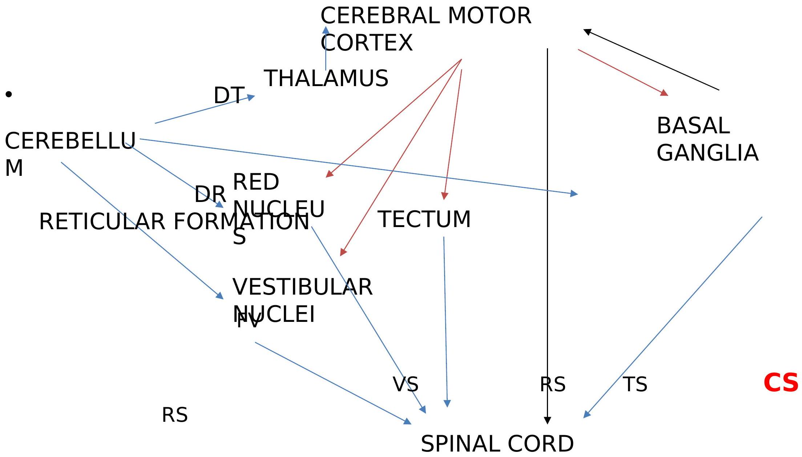

DESCENDING PATHWAYS
CORTICOSPINAL
ORIGIN
- Cerebral cortex
- Primary motor area (30%)
- Premotor area (30%)
- Primary sensory area (40%)
- From layer 5 (inner pyramidal) and especially from the giant pyramidal cells of Betz
INTO THE CORONA RADIATA

Through posterior limb of INTERNAL CAPSULE

CEREBRI
- Some corticonuclei to CIII &
Through the BASE of the PONS Corticonuclei to Cn V, Cn VI,

Enter the PYRAMIDS Corticonuclei to IX, X XI & XII leave

In medulla, decussation of (about 85-90%) fibres occurs

DECUSSATION

TERMINATION
- Fibres exit in order: Cervical, thoracic, Lumbar then sacral.
- Uncrossed cross via an interneuron
- Crossed fibres synapse on the anterior horn cell directly
LESIONS upper motor neuron
- MUSCLE BULK: slightly reduced due to disuse
- MUSCLE TONE: High (Hypertonic- clasp knife rigidity)
- TENDON REFLEXES: Exaggerated
- PLANTAR REFLEX: Up-going/extensor (Babinski's sign positive)
RUBROSPINAL
- From red nucleus
- Decussate in ventral tegmental decussation
- Descend as rubrospinal in lateral funiculus
- Terminate on anterior horn cells
RUBROSPINAL

RUBROSPINAL TRACT
others
Tectospinal -from the colliculi -decussate in the dorsal tegmental decussation
- Descend as tectospinal
- Terminate on cervical anterior horn cells
Reticulospinal
- From the reticular formation
- Raphe nuclei, Locus ceruleus
- Terminate on Substantia gelatinosa, AHC etc
- Regulation of pain mechanisms, truncal balance
Vestibulospinal
- From the vestibular nuclei in the pons
- In anterior funiculus
- Control of truncal balance in response to vestibular and cerebellar output
SUMMARY Motor systems

DESCENDING PATHWAYS Influences
- Voluntary movements
- Reflex modulation
- Gamma bias
LOWER & UPPER MOTOR NEURON LESIONS
| LOWER MOTOR |
UPPER MOTOR |
|
|---|---|---|
| MUSCLE WASTING |
YES | NO |
| MUSCLE TONE |
LOW (HYPOTONIA) |
HIGH (HYPERTONIA Clasp-knife) |
| DEEP TENDON REFLEXES |
REDUCED/ABS ENT |
HYPERREFLEXI A |
GRACIAS
GRACIAS